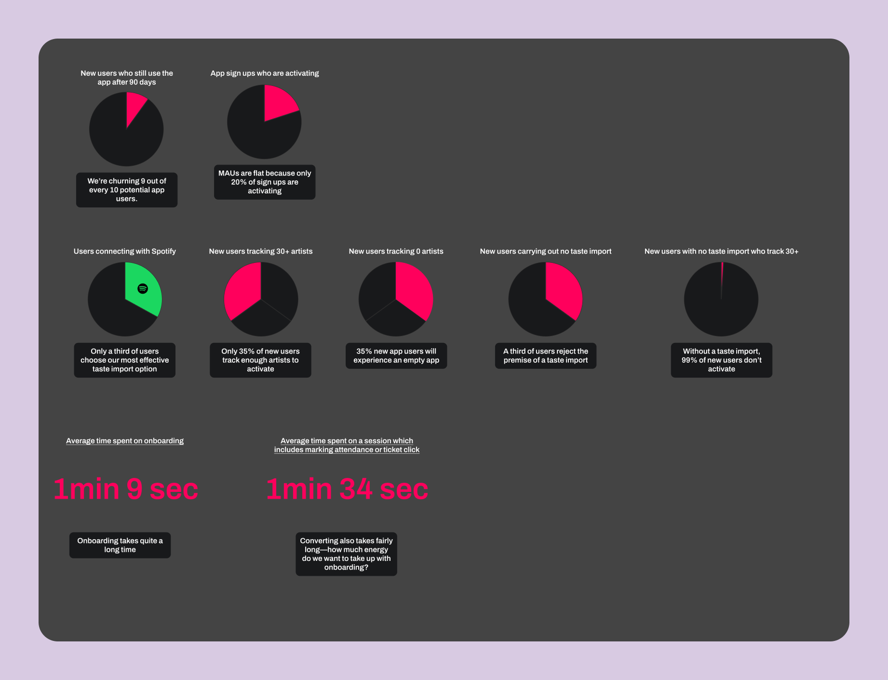
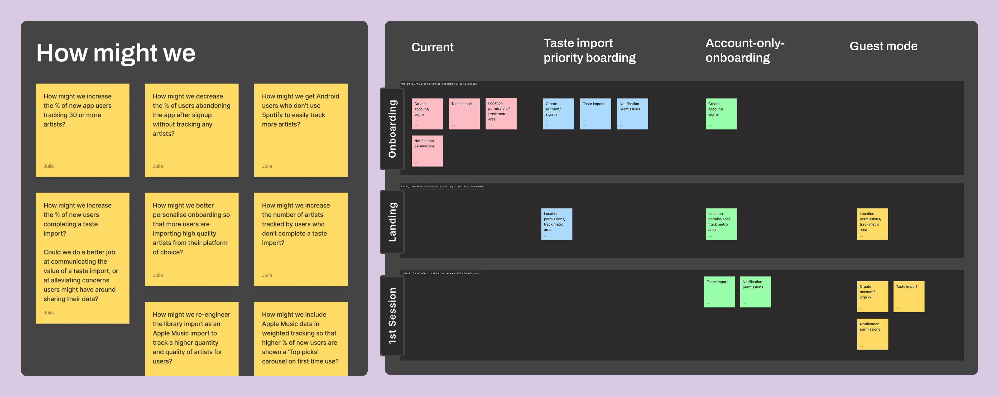
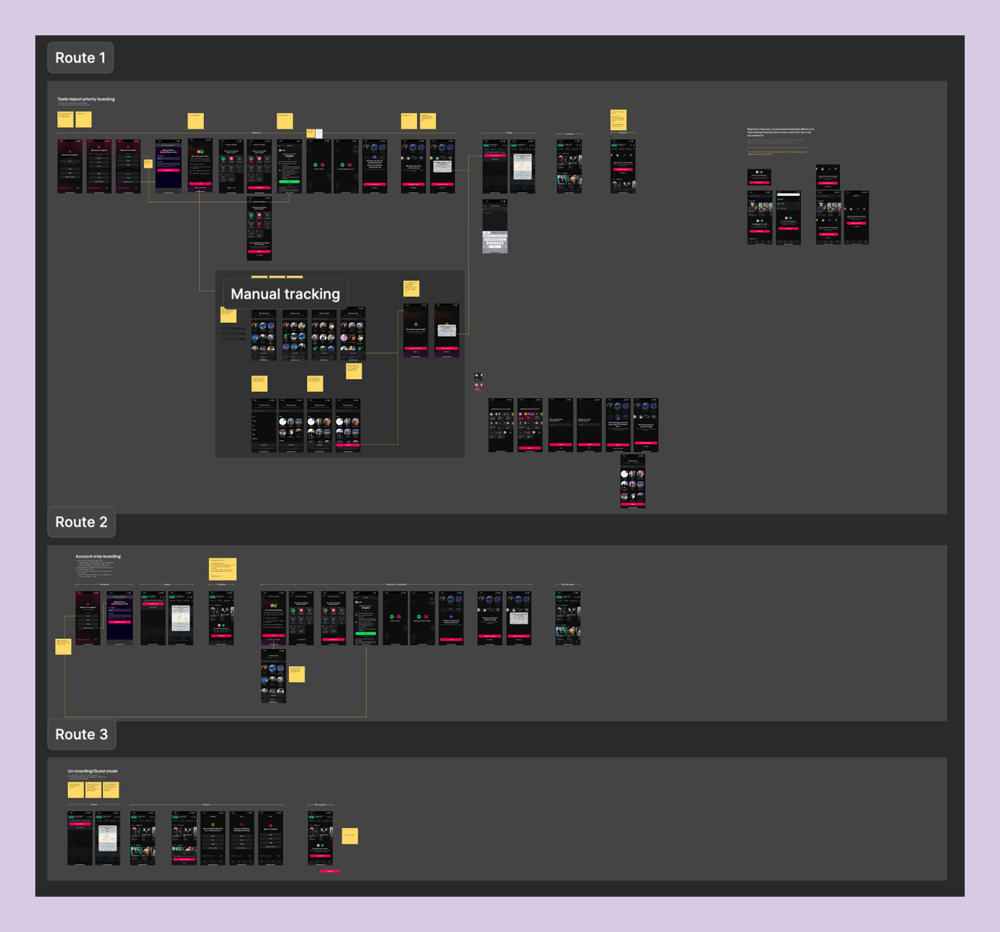

Context
Songkick is a concert discovery app with 460K monthly active users, helping people track their favourite artists and get notified about live shows in their area. The product has long had strong acquisition (particularly via its website), but poor retention.
At the time we were considering this project, one of our overarching company KRs was to increase logged in MAUs by 15%. For onboarding, this means that new users should have a high quality, high value first time experience while also fulfilling as many activation criteria as possible to maximize the likelihood of repeat, valuable experiences in the app.
Activation criteria
- Sign up
- Allow notifications
- Track a location
- Track at least 30 artists

The original onboarding flow was lengthy and overly complex, leading to significant dropoff at various steps
Initial research
Knowing that onboarding could be a suitable lever to move our target metric, I worked with a PM to carry out an initial research phase. Our goal here was not only to get a better picture of our baseline, but also to use this to build stakeholder confidence and secure roadmap prioritization.
Data analysis showed that 40% new users were not completing sign up. Of those that did, many were landing in an un-personalised experience in the app with only 1/3 of users taking high-value action (clicking a ticket link or marking Interested/Going on an event) post-onboarding.
To us, this signalled that onboarding suffered not only from poor UI (due to having been neglected for a number of years) but was actually a significant bottleneck in which users were not having an aha moment—leaving little to no motiviation to return to the app.

A snapshot of some of the metrics we investigated.
Process
Once we had secured roadmap prioritization, I took our research and developed a set of HMWs, eventually mapping out three different directions for the new onboarding flow, each entailing various levels of complexity.

Early work mapping out ideas.
Making strategic tradeoffs
I came up with low-fi designs for each of the three proposed routes, visualizing what each user journey would look like. In the end, we went with a route which proposed optimizing the existing steps first, rather than shortening the onboarding flow more radically (e.g., by deferring steps like the Notification permisison prompt to appear contextually in the app, rather than as a discreet step in onboarding.)
This decision allowed us to deliver an immediate, measurable uplift, establishing a solid foundation from which we could launch more radical, data-driven experiments in the future.

Low-fi designs of the three proposed routes which I brought to my product trio to discuss.
The new flow in action
Click-through prototype of my finished designs. This is one of the core flows—signing up via Spotify.
Validating the new designs
Since the onboarding flow would need to be replaced end-to-end—representing significant product risk—I used my prototypes to run an unmoderated Maze study to help validate the new design. From this I learned that:
- Marketing carousel had low engagement but positive sentiment
- 'Get notified' CTA was effective; notification prompt placement felt natural
- Initial mixed feedback on location prompt — resolved by improving flow contextualisation
- Overall flow rated as easy and fast, with one user commenting: "Very quick, not an issue... I quite enjoyed it, actually."

Unmoderated testing via Maze.
Three key before & afters
1. Addressing redundancy
On iOS, the existing flow asked users to complete a local library scan before signing up—a largely obsolete step, since very few people still store music locally. This created three problems: an unclear CTA ('Find my favourite artists'), an intrusive permissions request before any value had been demonstrated, and confusing sequencing where sign-up CTAs appeared after the library scan.
I proposed consolidating the entry point into a single, high-efficiency screen: a marketing carousel to communicate Songkick's value, with all authentication options contained within two clear bottom sheets. This eliminated two steps from the journey, reducing cognitive load and directly contributing to the 7pp uplift in completion.

2. Contextualising permissions
Previously, notifications were presented on a standalone screen—essentially demanding permissions before demonstrating personalisation. Location was also asked on its own screen, compounding the perception that onboarding was lengthy and cumbersome.
In the new flow, notifications are prompted on the artist tracking success screen ("You're tracking 105 artists! Get notified when they play near you"), giving the request immediate relevance. Location is deferred to the app landing page, giving users a sense of near-completion before asking for the final permission.

3. Improving manual tracking
The number of artists tracked is a core metric for Songkick—it directly drives personalised content and increases the value of re-engagement channels. For users who don't complete the automatic taste import via Spotify or Apple Music, we identified high friction in the manual tracking flow: users would often track only very few artists, if any at all.
The solution was to redesign the flow from a static, stale list to an efficient and fun activation tool. It now features a search function and incorporates a familiar recommendation pattern—suggesting 4 new artists for every artist tracked. This pattern, consistent with platforms like Spotify and Deezer, significantly lowers the effort barrier for new users.
Outcomes & reflection
The new onboarding flow is faster and easier for users to complete, taking around 10 seconds less than before. Higher engagement with key actions in the app (marking attendance, clicking a ticket link) post-onboarding, as well as the increase in day 7 retention, points to the fact that value is better communicated in the new onboarding screens, leaving users ready to explore the app.
There’s still a case to be made for deferring some of these onboarding steps to happen contextually in the app. Presumably, while such an approach would initially decrease the rate of activation in new users, it could later drive a stickier experience in which users are able to experience Songkick’s core benefits for themselves, following the principle of ‘show, don’t tell’.
| KPI | Old rate | New rate |
|---|---|---|
| Day 7 retention (users active on day 7) | 6.27% | 14.01% ↗124% |
| Install → Onboarding complete | 60% | 67.06% ↗12% |
| Install → Attendance or ticket click | 26.8% | 31.1% ↗16% |
| Average number of artists tracked | 5.48 | 12.99 ↗137% |
| Average time to complete onboarding | 1min 9sec | 59sec ↘14% |